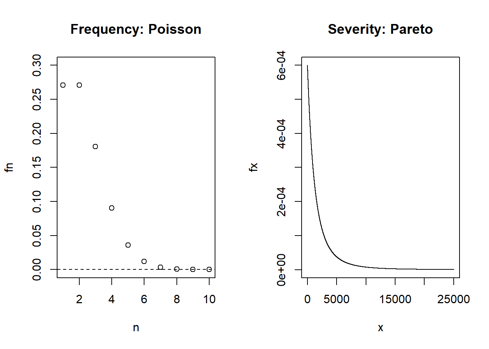
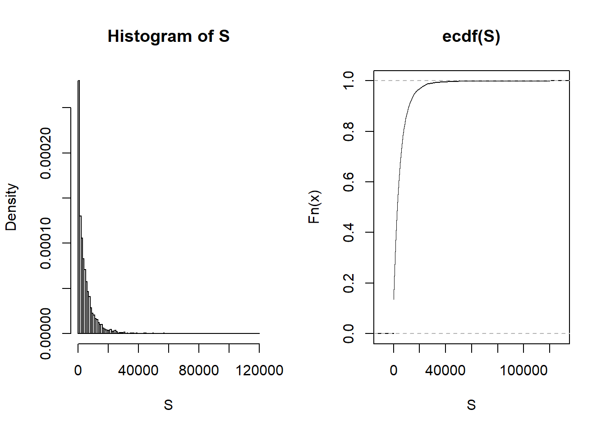
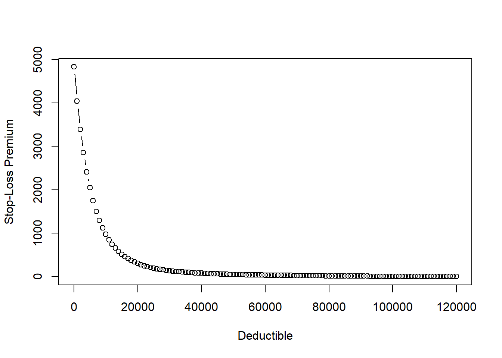

Chapter 6 Aggregate Claim Simulation
This file demonstrates simulation of aggregate claim distributions. When reviewing this code, you should open an R session, copy-and-paste the code, and see it perform. Then, you will be able to change parameters, look up commands, and so forth, as you go.
6.1 Collective Risk Model: without coverage modifications
S = X_1 + … + X_N
Assume N ~ Poisson(lambda=2) and X ~ Pareto(alpha=3,theta=5000)
6.1.1 Set Parameters
lambda <- 2
alpha <- 3
theta <- 50006.1.2 Show frequency and severity distributions
Graphing the our frequency (N) and severity (X) distributions
par(mfrow=c(1,2))
n <- 1:10
fn <- dpois(1:10,lambda)
plot(n,fn,ylim=c(0,0.3),main="Frequency: Poisson")
abline(h=0,lty=2)
x <- seq(1,25000,1)
fx <- alpha*theta^alpha/(x+theta)^(alpha+1)
plot(x,fx,type="l",main="Severity: Pareto")
6.1.3 Set sample size for the simulation
We’re going to simulate 5000 observations of S
set.seed(123)
size <- 5000
S <- rep(NA,size)
N <- rpois(size,lambda)
for (i in 1:size){
uu <- runif(N[i])
X <- theta*((1-uu)^(-1/alpha)-1)
S[i] <- sum(X)
}6.1.4 Show distribution of aggregate loss S
par(mfrow=c(1,2))
hist(S,freq=F,breaks=100)
plot(ecdf(S),xlab="S")
6.2 Applications
6.2.1 Find descriptive statistics
Here we show numerical descriptions of our simulated distribution S
mean(S) # sample mean[1] 4829.894sd(S) # sample standard deviation[1] 6585.567quantile(S,prob=c(0.05,0.5,0.95)) # percentiles 5% 50% 95%
0.000 2846.073 15983.408 6.2.2 Calculate cdf
sum((S==0))/size[1] 0.1348Pr(S=0)
sum(S<=mean(S))/size[1] 0.6578Pr(S<=E(S))
sum(S>mean(S))/size [1] 0.3422Pr(S>E(S))
6.2.3 Calculate risk measures
VaR <- quantile(S,prob=0.99) # significance level = 0.01
CTE <- sum(S*(S>VaR))/sum((S>VaR))
rm <- c(VaR,CTE)
names(rm) <- c("VaR","CTE")
print(rm) VaR CTE
28636.56 43193.19 6.2.4 Pricing stop-loss insurance - Set deductible
Here we plot how the premium for a stop-loss insurance product changes based on the size of the deductible
par(mfrow=c(1,1))
d <- seq(0,120000,1000)
price <- rep(NA,length(d))
for (i in 1:length(d)){
price[i] = sum((S-d[i])*(S>d[i]))/size
}
plot(d,price,xlab="Deductible",ylab="Stop-Loss Premium",type="b")